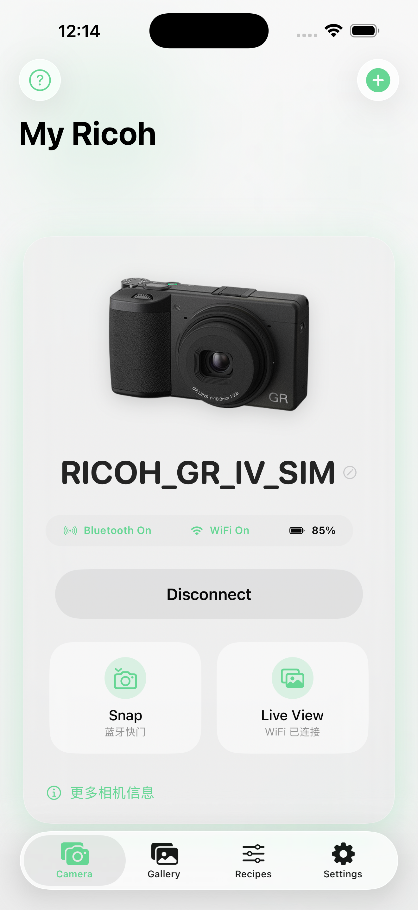

遥控与实时取景
通过相机本地 Wi-Fi 查看实时画面、触发快门，并使用相机支持的对焦和曝光控制。
免费 · 独立开发 · iOS 17.2+
支持 Ricoh GR II、GR III、GR IIIx 和 GR IV 系列。远程控制、实时取景、JPEG/DNG 照片传输、地理标记和配方管理，尽在 iPhone。

通过相机本地 Wi-Fi 查看实时画面、触发快门，并使用相机支持的对焦和曝光控制。
浏览 SD 卡中的 JPEG 和 DNG，批量下载到 iPhone，并通过实时活动查看进度。
创建、编辑、标记、导入、分享配方，并通过用户私有 iCloud 容器同步。
照片、配方、相机密码和位置数据不会上传至 GR Link 运营的服务器。相机通信发生在 iPhone 与相机之间；可选同步使用你的私有 iCloud 容器。
GR Link 是独立开发的第三方应用，与 Ricoh Imaging Company, Ltd. 无从属、授权、合作、认可或赞助关系。